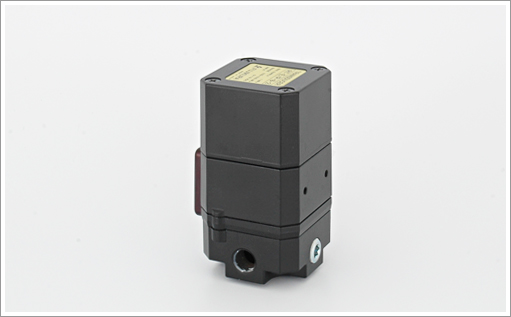
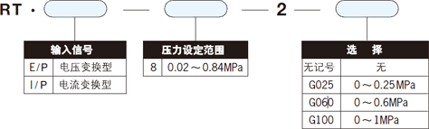
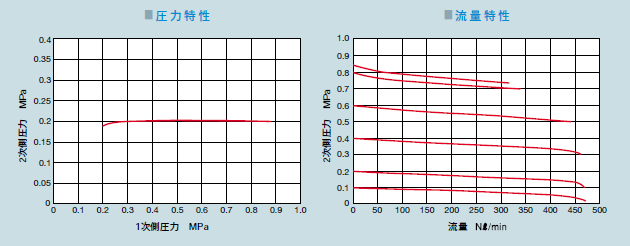
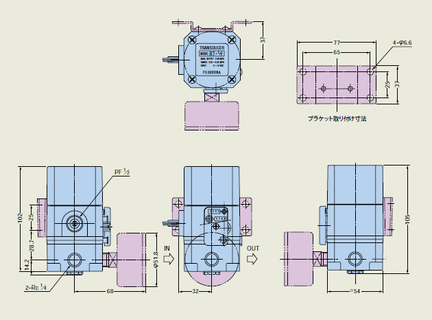

调压阀（减压阀）


通过电器信号进行压力设定的调压阀。


| RT・E/P-8-2 | RT・I/P-8-2 | RT・I/P-1-2 | ||
| 使用流体 | 圧縮清浄空気 | |||
| 压力设定范围 （MPa） | 0.02～0.82 | 0.02～0.1 | ||
| 进口压力范围 （MPa） | 1.MAX、 压力设定＋0.035以上 |
0.7.MAX、 设定压力＋0.02以上 |
||
| 输入信号 | 控制方式 | 电压2线式 | 电流2线式 | |
| 电压 （VDC） | 0～10 | - | ||
| 输入阻抗 （Ω） | 805 | - | ||
| 电流 （mADC） | - | 4～20 | ||
| 输入阻抗 （Ω） | - | 260 | 180 | |
| 直线性 （％.F.S） | 1.5 | |||
| 迟滞性 （％.F.S） | 1.0 | |||
| 反复再现性 （％.F.S） | ±0.1 | ±0.5 | ||
| 阶段应答性 （sec） | 1.0 | 0.2 | ||
| 间距调整下限值 （MPa） | 0.65 | 0.24 | 0.08 | |
| 排气感度 （MPa） | 设定压力＋0.001以下 | |||
| 空气消耗量 （Nl/min） | 3.7以下 | 4.8以下 | ||
| 使用温度范围 （℃） | 5 ～ 60 | |||
| 配管连接口径 （Rc） | 1/4 | |||
| 压力表连接口径 （Rc） | 1/4 | |||
| 支架 | 标准配置 | |||
| 重量 （kg） | 0.94 | |||


※オプションは圧力計のことをさしています。 →圧力計について（PDF）



